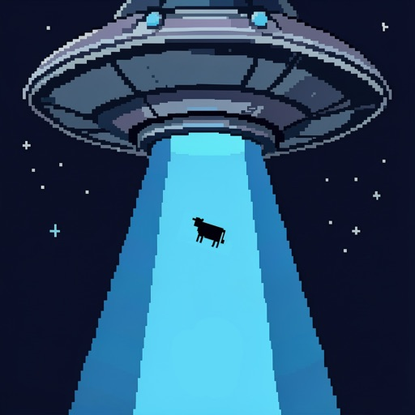
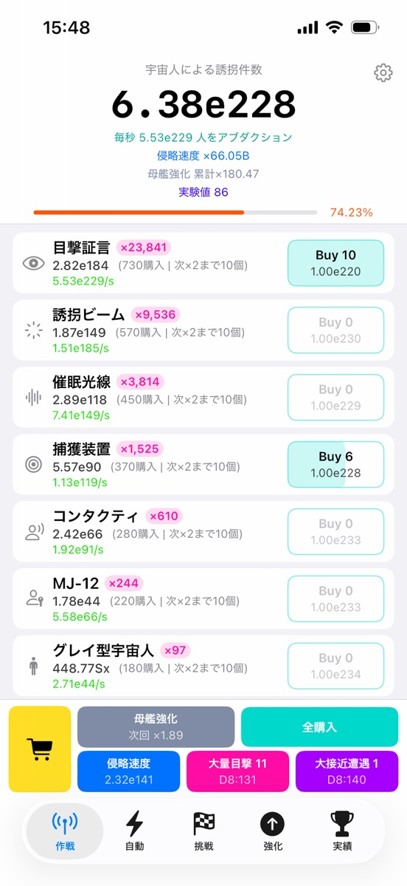
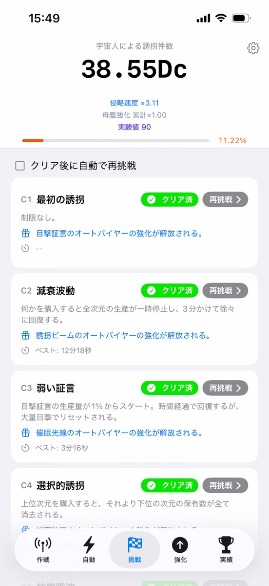
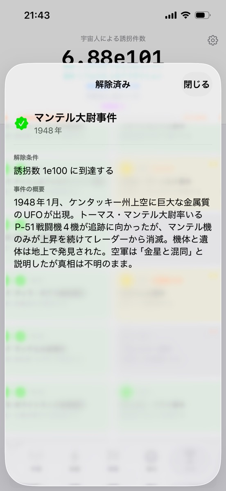
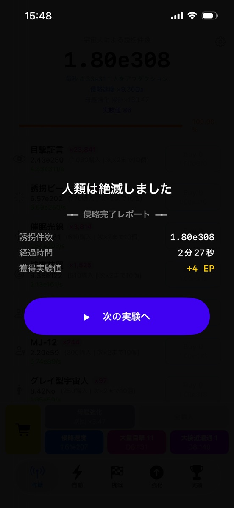

UFOクリッカー
宇宙人になって、地球人をアブダクション（誘拐）していく放置クリッカーです。円盤を強化し、侵略を広げ、誘拐件数はやがて 1e308 を超えます。その先で、人類は絶滅します。
どんなゲームか
目撃証言、誘拐ビーム、催眠光線、MJ-12、グレイ型宇宙人。
8段階の「侵略層」が、下の層を増やしながら誘拐件数を生み出します。
押さなくても、侵略は進みます。
侵略層を積み上げる
上の層が下の層を生み、いちばん下が誘拐件数を生む。8段階の連鎖で、数字は指数関数的に伸びていきます。
人類絶滅
誘拐件数が 1.8e308 に届くと、人類は絶滅します。すべてを手放す代わりに「実験値」を得て、より強い状態で次の実験へ。
覚醒と時空研究
実験値が限界を超えたら、覚醒です。重力層、時空研究のツリー、覚醒チャレンジ、時空拡張。周回を重ねるほど、遊びが一段ずつ増えていきます。
実績はUFO事件史
192個の実績は、1947年から2009年までの
実在のUFO事件・目撃談になっています。
事件の概要つき
マンテル大尉事件、ロズウェル、ケネス・アーノルド。実績を解除すると、その事件がどんなものだったのかを読めます。
時代をたどる
空飛ぶ円盤が初めて報じられた1947年から、グレイとエリア51、ペンタゴンのUAP映像まで。侵略の進み具合とともに時代が進みます。
解除すると強くなる
実績には、それぞれ侵略を後押しする効果があります。集めるほど、誘拐ははかどります。
1.7.5 の大型アップデート
2026年10月の 1.7.5 で、覚醒から先を大きく作り直しました。
覚醒以降が速く
侵略速度の計算を本来の仕様に直し、覚醒してから先の進み方が大幅に速くなりました。時空拡張やクローンまわりの数値も見直しています。
研究ツリーを保存
時空研究のツリーを3つまで保存して、タップひとつで呼び出せます。定理は枠をタップするだけで、買えるだけ買えます。
覚醒チャレンジ
クリアするたびに研究を組み直す、本来の手応えになりました。カードには、解放の条件がひと目で出ます。
画面




よくある質問
課金はありますか？
アプリは無料で、広告が入ります。広告を外す「サポーターパック」と、ゲーム内のショップで使う通貨を、アプリ内課金で買えます。
アプリを閉じている間はどうなりますか？
閉じている間も侵略は進みます。最初は2時間ぶんまでで、ゲーム内で最大12時間まで伸ばせます。
実績に出てくる事件は本当の話ですか？
実際に報告・報道されたUFO事件や目撃談をもとにしています。宇宙人が誘拐しているのは、ゲームの中だけの話です。
データはどこに保存されますか？
ゲームの進行は端末の中と iCloud に保存されます。詳しくはプライバシーポリシーをご覧ください。
サポート
不具合の報告、ご要望、使い方のご質問はこちらからどうぞ。個人で開発・運営しているため、すべてに返信できるとは限りませんが、いただいた内容はすべて目を通しています。
データの取り扱いについてはプライバシーポリシーをご覧ください。